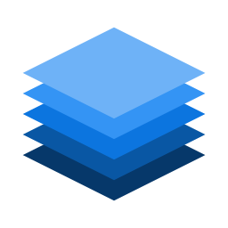
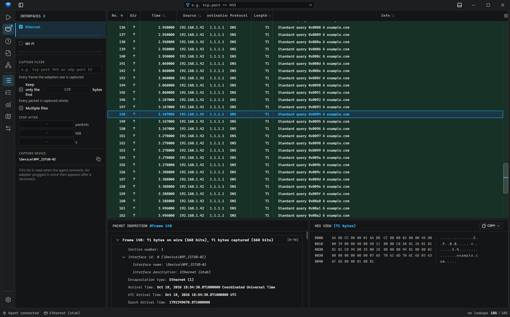
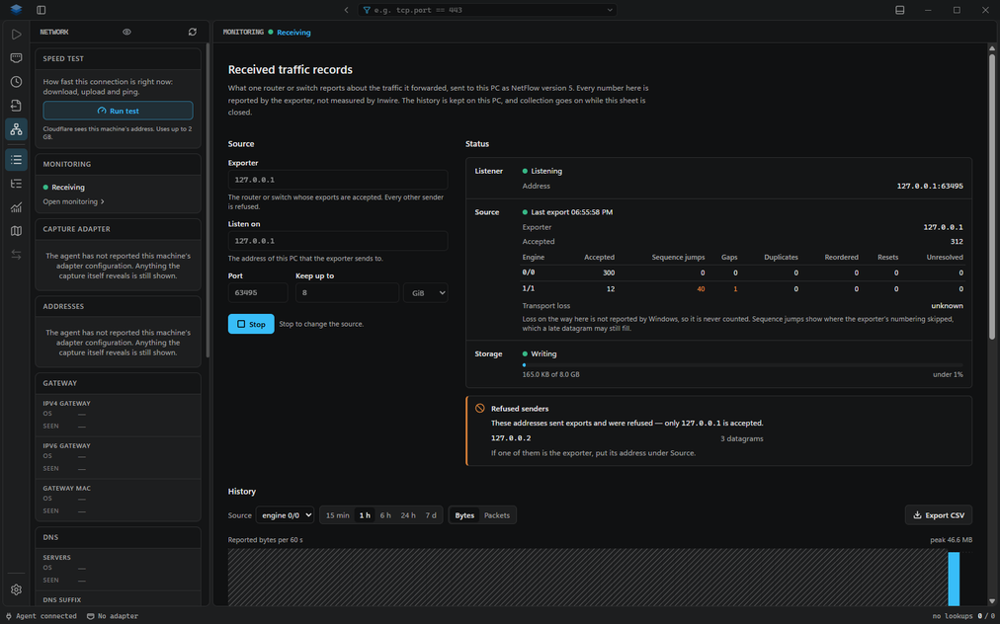

Inwire
Version 0.5.0, WindowsDesktop packet analyzer for Windows

Live capture
- The app runs without administrator rights: a separate Rust service holds the Npcap capture handle and streams frames to it over a named pipe.
- Packet list virtualised by hand, reading older rows back from disk. In replays of a recorded burst on my PC the live view kept up with about 85,000 frames a second.
- Display filters run over the whole capture on disk, including frames that have left memory.
- Decodes about 100 protocols in its own TypeScript dissectors, from Ethernet and TCP to QUIC, HTTP/3, SMB2 and Kerberos, and decrypts TLS 1.2, TLS 1.3 and QUIC from a browser's SSLKEYLOGFILE.
- 74 decision records explain the design, each with what it cost.


Monitoring